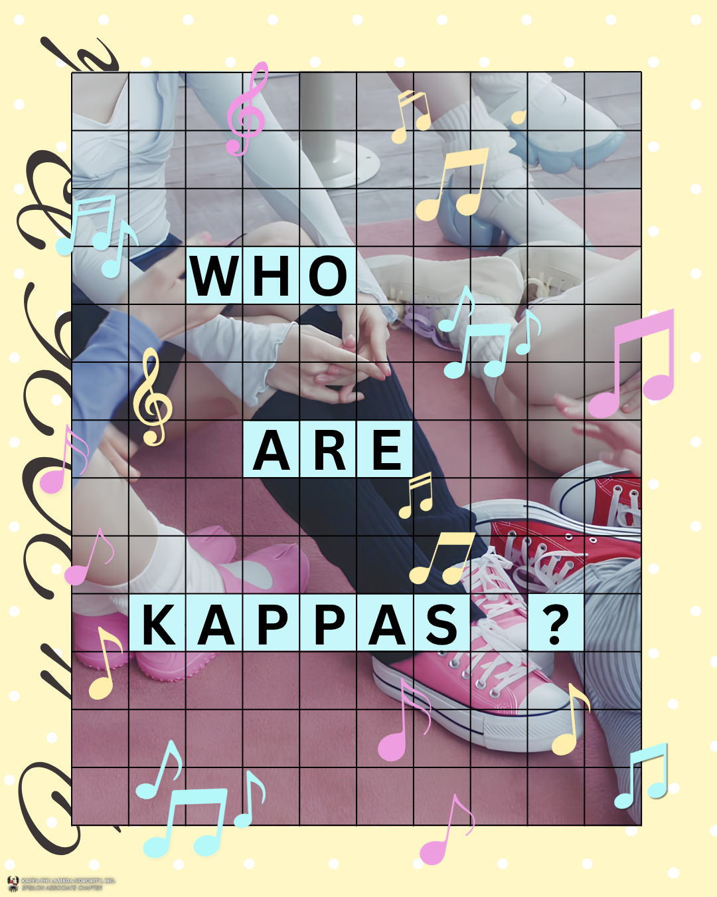
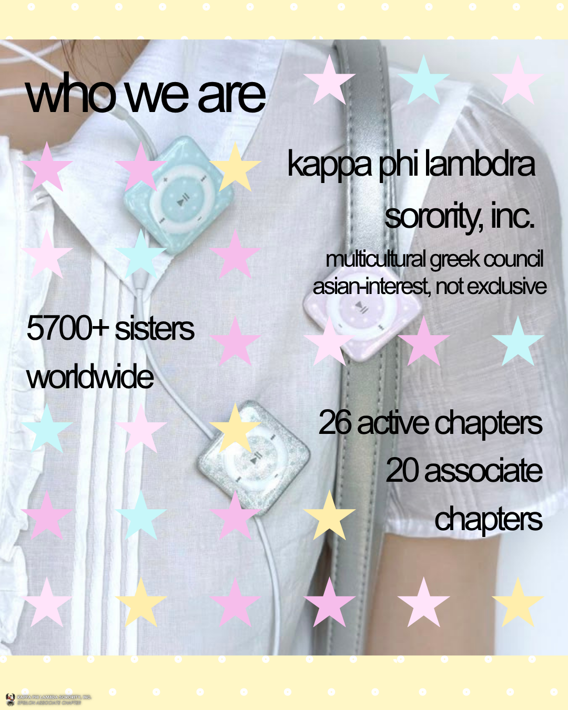
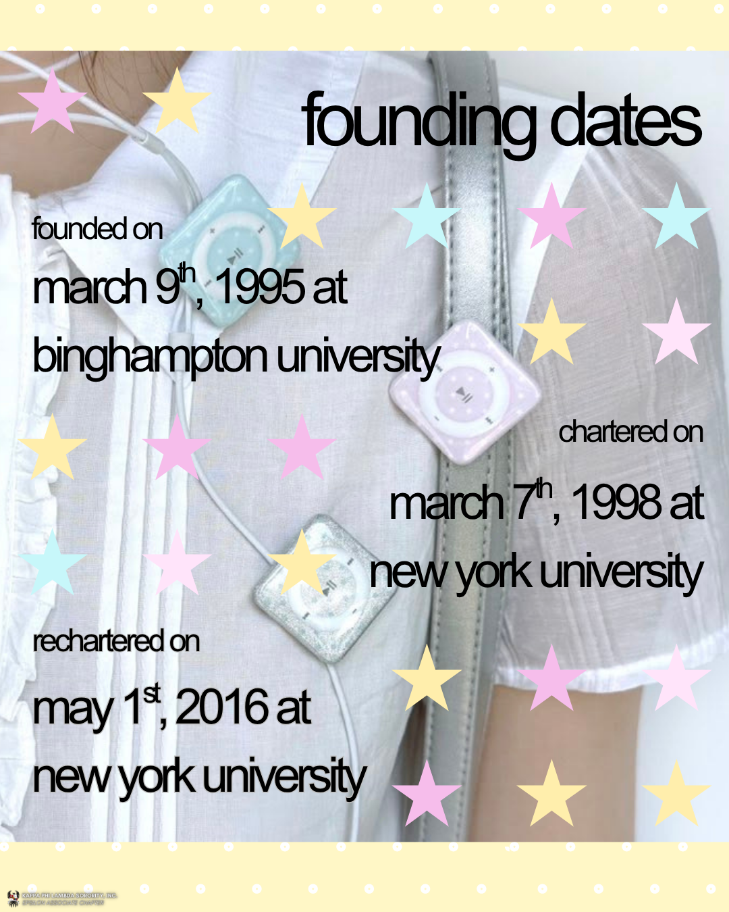
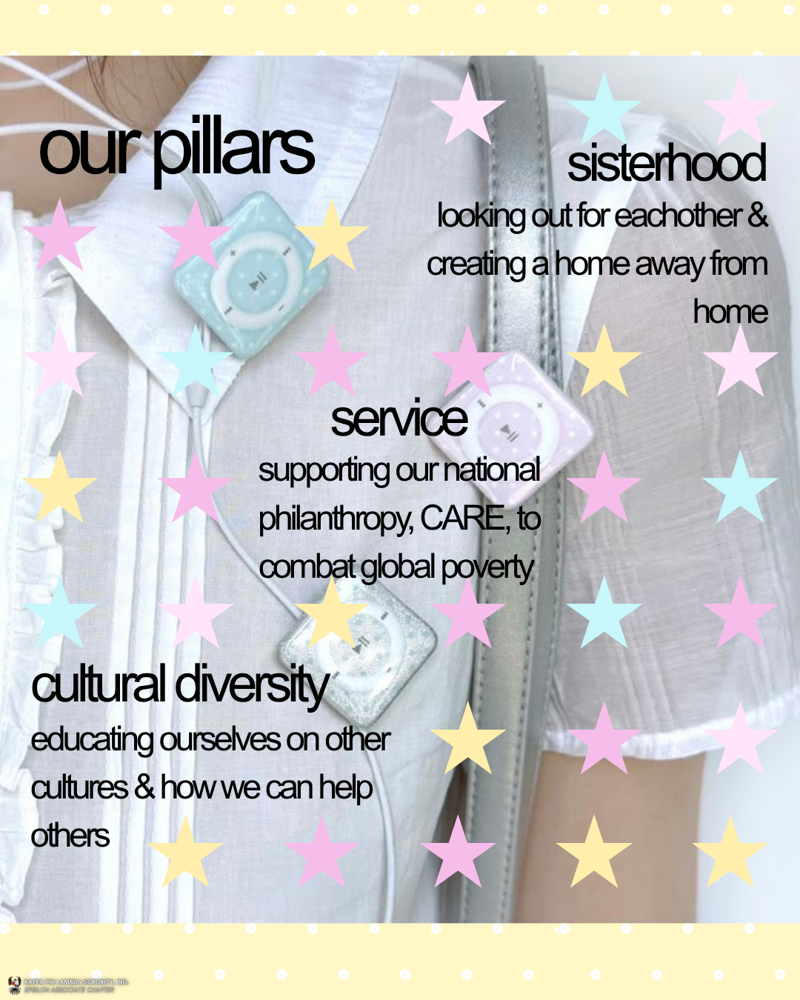
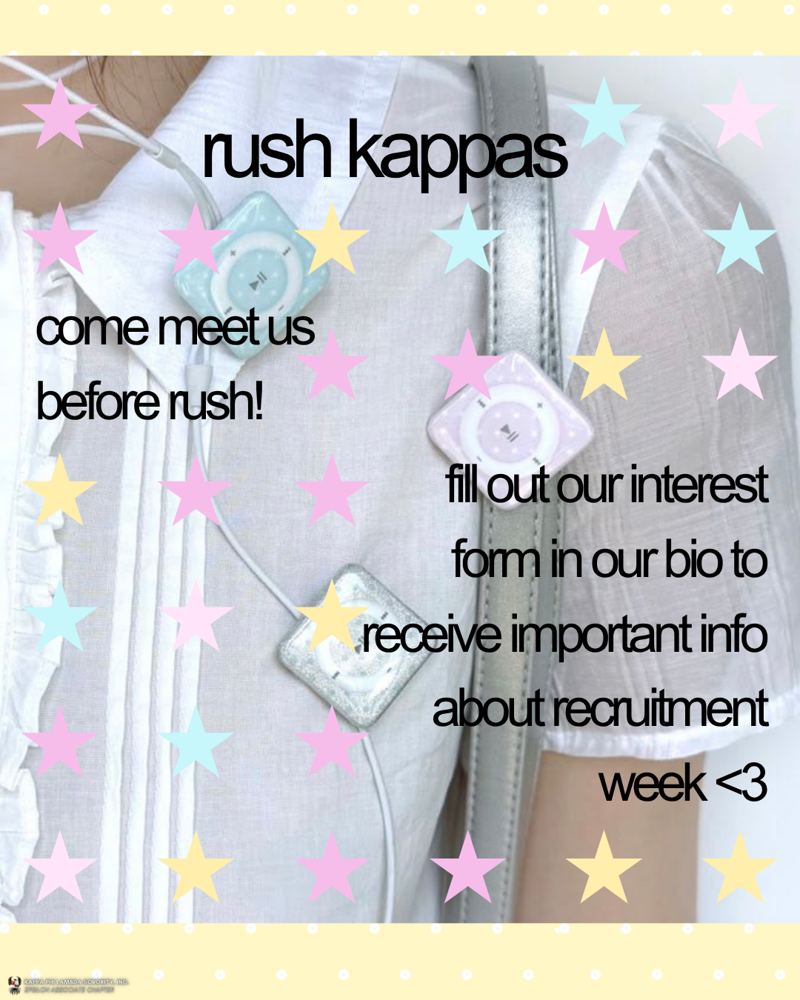
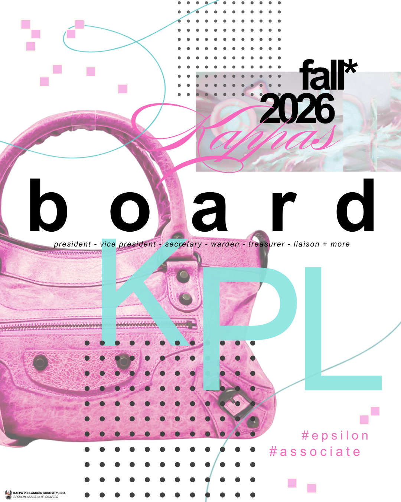
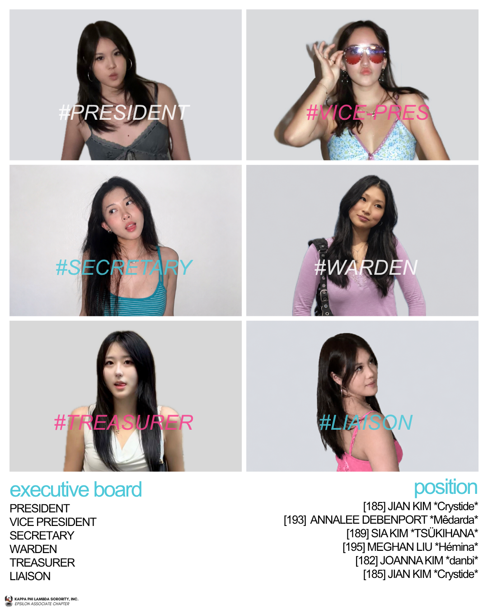

01
Active House Video
My first video project. Features shots I took of my organization members, filmed in shoot locations and outfits I planned and executed to achieve a brand identity.
View projectMy first video project. Features shots I took of my organization members, filmed in shoot locations and outfits I planned and executed to achieve a brand identity.
View project




Graphics introducing my org. I experimented heavily with grid designs here.
View project

My first graphic as Head Public Relations of my school org. It reached 17.6K people.
View project